용접기사 (2004-08-08 기출문제)
1과목: 기계제작법
1. 라이저(riser)의 설치목적은 무엇인가?
- 주물의 변형을 방지한다.
- 주형내의 쇳물에 압력을 준다.
- 주형내에 공기를 넣어준다.
- 주형의 파괴를 방지한다.
(정답률: 알수없음)

2. 지름이 100 mm, 판의 두께 5 mm, 전단저항이 45 ㎏f/mm2 인 0.4% C 강판으로 원판을 전단할 때, 최대전단하중은?
- 약 80.5 ton
- 약 70.7 ton
- 약 62.5 ton
- 약 50.8 ton
(정답률: 알수없음)
3. 플래시 버트 용접(flash butt welding)에서 산화물이나 불순물은 어떻게 처리되는가?
- 용제의 사용으로 제거된다.
- 접합부에 생기는 용융금속에 묻어 흘러나간다.
- 압접할 때 밀려 나간다.
- 접합부에 그대로 잔류한다.
(정답률: 알수없음)
4. 정밀입자 가공에 대한 설명 중에서 옳은 것은?
- 호우닝 작업에서 가공면상에는 크로스 해치 (cross hatch)자국이 남지 않는다.
- 래핑작업 중 건식래핑은 비교적 거칠은 래핑 작업이고, 습식래핑은 다듬질 작업으로 매우 광택있는 면을 얻을 수 있다.
- 액체 호우닝은 다량의 호우닝 액을 첨가한 상태에서 호운이라는 공구에 회전운동과 동시에 축방향 왕복운동을 주어 구멍내면을 정밀하게 다듬는 가공이다.
- 수우퍼 피니싱에서는 입도가 고운 비교적 연한 숫돌을 낮은 압력으로, 회전하는 공작물 표면에 누르고 진동을 주면서 표면가공을 한다.
(정답률: 알수없음)
5. 다음 판금 및 제관작업의 설명 중에서 옳은 것은?
- 판금작업에서 재료를 국부 가열을 하는 것은 국부에 한하여 열처리하기 위한 것이다.
- 판금작업에 있어서 소재에 변형이 있어도 가공에는 지장이 없다.
- 제관 작업이 끝나면 내압용기에서는 물을 넣고 소정의 시험압력으로 수압시험을 한다.
- 제관의 내압용기에서는 수압시험 보다 공기압 시험이 좋다.
(정답률: 알수없음)
6. 최소 측정값이 1/20 mm 인 버니어 캘리퍼스에 대한 설명으로 옳은 것은?
- 본척의 눈금이 1 mm, 부척의 1눈금은 12 mm 를 25 등분한 것
- 본척의 눈금이 1mm, 부척의 1눈금은 19 mm 를 20 등분한 것
- 본척의 눈금이 0.5 mm, 부척의 1눈금은 19 mm 를 25 등분한 것
- 본척의 눈금이 0.5 mm, 부척의 1눈금은 24 mm 를 20 등분한 것
(정답률: 82%)
7. 절삭 공구의 수명과 가장 관계가 없는 것은?
- 절삭속도
- 마멸
- 공작물의 크기
- 절삭온도
(정답률: 알수없음)
8. 나사의 유효지름을 측정할 때 가장 정밀도가 높은 측정법은?
- 나사마이크로미터에 의한 측정
- 공구현미경에 의한 측정
- 삼침법에 의한 측정
- 투영기에 의한 측정
(정답률: 알수없음)
9. 목형제작에 가장 적합한 목재의 결은?
- 곧은결
- 무늬결
- 옹이결
- 수피결
(정답률: 알수없음)
10. 다이캐스트 금형(金型)에서 공기(空氣)의 배제(排除)에 관하여 옳은 것은?
- 다이캐스트 금형에서는 공기배제(空氣排除)의 필요가 없다.
- 다이 분할면(分割面)에 슬리트(Slit)를 마련해 두어 공기를 배제한다.
- 다이 바닥면(面)에 세공(細孔)을 여러개 뚫어 두어 공기를 배제한다.
- 쇳물에 탈기제(脫氣制)를 넣어 공기배제 역할을 시킨다.
(정답률: 알수없음)
11. 연삭숫돌의 눈막힘(loading)의 원인에 대해서 설명한 것중 틀린 것은?
- 숫돌의 입자가 너무 작다.
- 드레싱이 불량하다.
- 연삭액이 부적합하다.
- 숫돌의 원주속도가 너무 크다.
(정답률: 알수없음)
12. 숫돌의 색이 녹색이며 초경 합금의 연삭에 사용하는 것은?
- D 숫돌
- A 숫돌
- WA 숫돌
- GC 숫돌
(정답률: 알수없음)
13. 강철(steel)의 A1변태에서는 다음 변화가 생긴다. 이 중 틀린 것은?
- γ-고용체 ⇄ α-고용체
- 오스테나이트 ⇄ 페라이트
- 면심입방격자 배열 ⇄ 체심입방격자 배열
- 고용탄소 ⇄ 유리탄소
(정답률: 43%)
14. 초음파 가공장치에 관한 설명으로 맞지 않는 것은?
- 구멍을 가공하기 쉽다.
- 복잡한 형상도 쉽게 가공할 수 있다.
- 부도체의 가공을 할 수 없다.
- 가공재료의 제한이 매우 적다.
(정답률: 70%)
15. 인벌류트 치형의 피치오차를 측정하는 데, 가장 적합한 측정기는?
- 실린더 게이지
- 마이크로미터
- 다이얼 게이지
- 버니어캘리퍼스
(정답률: 알수없음)
16. 자유단조의 기본작업 방법에 해당되지 않는 것은?
- 넓히기 (spreading)
- 축박기 (up-setting)
- 굽히기 (bending)
- 스피닝 (spinning)
(정답률: 알수없음)
17. 소결 다이아몬드 재료(ø 30× 50)에 ø 1.5의 구멍을 가공하려고 한다. 다음 가공법 중 가장 적합한 방법은?
- 래핑가공
- 방전가공
- 호닝가공
- 연삭가공
(정답률: 알수없음)
18. 내산성을 증가시키는 방법으로 강철 표면에 Si 를 침투시켜 실리콘나이징(siliconizing)을 한다. 올바른 반응은?
- 2Fe + SiCl4 ⇄ FeCl2 + Si
- 3Fe + 2SiCl4 ⇄ FeCl3 + 2Si
- 4Fe + 3SiCl4 ⇄ FeCl4 + 3Si
- 5Fe + 4SiCl4 ⇄ FeCl5 + 4Si
(정답률: 알수없음)
19. 유압프레스에서 램의 유효단면적이 50 cm2, 유효단면적에 작용하는 최고 유압이 40 kgf/cm2 일 때 유압프레스의 용량은 몇 ton 인가?
- 20
- 5
- 2
- 0.2
(정답률: 알수없음)
20. 절삭가공에서 빌트업 에지(built-up edge)에 관한 설명으로 옳은 것은?
- 공구 윗면경사각이 작을수록 빌트업 에지는 작아진다
- 고속으로 절삭할수록 빌트업 에지는 감소한다.
- 마찰계수가 큰 절삭공구를 사용하면 칩의 흐름에 대한 저항을 감소시킬 수 있다.
- 칩의 두께를 증가시키면 빌트업 에지를 감소시킬 수 있다.
(정답률: 알수없음)
2과목: 재료역학
21. 탄성계수 E, 전단 탄성계수 G 인 재료로 되어 있는 지름 D이고, 길이 ℓ 인 둥근봉이 비틀림모멘트 T를 받고 있다. 이때 이 봉속에 저축되는 변형에너지는?
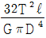
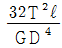
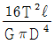
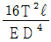
(정답률: 알수없음)
22. 다음 중 체적계수(bulk modulus)를 나타낸 식은? (단, E는 탄성계수, G는 전단탄성계수, ʋ는 포아송비이다.)
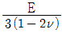
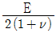
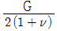
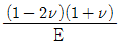
(정답률: 알수없음)
23. 지름 6 mm인 강철선 150 m가 수직으로 매달려 있을 때 자중에 의한 처짐량은 몇 mm 인가? (단, E = 200 GPa, 강철선의 비중량은 7.7x104 N/m3)
- 3.02
- 3.17
- 3.58
- 4.33
(정답률: 알수없음)
24. 바깥지름 d, 안지름 d/3인 중공원형 단면의 굽힘에 대한 단면계수는?
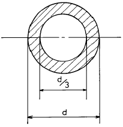
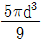
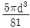
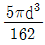
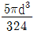
(정답률: 알수없음)
25. 공학적 변형률(engineering strain) e와 진변형률(true strain) ε 사이의 관계식으로 맞는 것은?
- ε = ln(e+1)
- ε = eln(e)
- ε = ln(e)
- ε = 3e
(정답률: 알수없음)
26. 그림과 같이 하중 P가 작용할 때 스프링의 변위 δ 는? (이때 스프링 상수는 k 이다.)
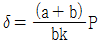
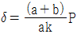
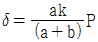
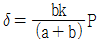
(정답률: 46%)
27. 길이 90 cm, 지름 8 cm의 외팔보의 자유단에 2 kN의 집중하중이 작용하는 동시에 150 Nㆍm의 비틀림 모멘트도 작용할때 외팔보에 작용하는 최대 전단응력은 몇 MPa 인가?
- 15
- 16
- 17
- 18
(정답률: 알수없음)
28. 사각형 단면의 전단응력 분포에 있어서 최대 전단응력은 전단력을 단면적으로 나눈 평균 전단응력 보다 얼마나 더 큰가?
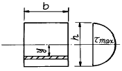
- 30 %
- 40 %
- 50 %
- 60 %
(정답률: 40%)
29. 그림과 같이 집중하중 P를 받는 외팔보가 있다. 모멘트 선도가 그림과 같을 때 B점에서의 처짐은? (단, E는 탄성계수, Ⅰ는 단면 2차 모멘트이다.)
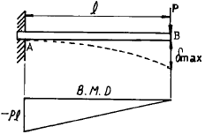
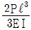
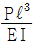
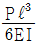
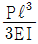
(정답률: 알수없음)
30. 길이가 50 ㎜ 인 원형단면의 철강재료를 인장하였더니 길이가 54 ㎜ 로 신장되었다. 이 재료의 변형률은?
- 0.4
- 0.8
- 0.08
- 1.08
(정답률: 알수없음)
31. 다음과 같은 부재의 온도를 ΔT만큼 증가시켰을 때, 부재 내에 발생하는 응력은? (단, 탄성계수는 E, 열팽창계수는 α이다.)
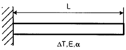
- 0
- α ΔT
- Eα ΔT
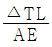
(정답률: 알수없음)
32. 다음 그림과 같은 균일 단면환봉이 축방향에 하중을 받고 평형이 되어 있다. Q=3P 가 되려면 W는 얼마인가?
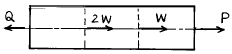
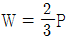
- W = 3P
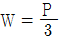
- W = 2P
(정답률: 알수없음)
33. 길이가 ℓ = 6 m인 단순보 위에 균일 분포하중 ω = 2000 N/m가 작용하고 있을 때 최대굽힘 모멘트의 크기는?
- 7000 Nㆍm
- 8000 Nㆍm
- 9000 Nㆍm
- 10000 Nㆍm
(정답률: 알수없음)
34. 그림과 같은 두 개의 판재가 볼트로 체결된 채 500 N의 인장력을 받고있다. 볼트의 중간단면에 작용하는 평균 전단응력은? (단, 볼트의 지름은 1 cm이다.)
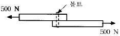
- 5.25 MPa
- 6.37 MPa
- 7.43 MPa
- 8.76 MPa
(정답률: 55%)
35. 길이가 3 m인 원형 단면축의 지름이 20 mm 일 때 이 축이 비틀림 모멘트 100 Nㆍm를 받는다면 비틀어진 각도는? (단, 전단탄성계수 G = 80 GPa 이다.)
- 0.24°
- 0.52°
- 4.56°
- 13.7°
(정답률: 알수없음)
36. 지름 30 mm의 원형 단면이며, 길이 1.5 m인 봉에 85 kN의 축방향 하중이 작용된다. 탄성계수 E = 70 GPa, 프와송비 ʋ = 1/3일 때, 체적증가량의 근사값은 몇 mm3 인가?
- 30
- 60
- 300
- 600
(정답률: 30%)
37. 길이가 60 ㎝이고 단면이 1 ㎝ x 1 ㎝인 알미늄 봉에 인장하중 P = 10 kN이 걸리면 인장하중에 의해 늘어난 길이는? (단, 알루미늄의 E = 20 GPa)
- 1.5 mm
- 3 mm
- 6 mm
- 2 mm
(정답률: 알수없음)
38. 보의 전 길이에 걸쳐 균일 분포하중이 작용하고 있는 단순보와 양단이 고정된 양단 고정보에서 중앙에서의 처짐량의 비는?
- 2:1
- 3:1
- 4:1
- 5:1
(정답률: 알수없음)
39. 그림의 얇은 용기가 균일 내압을 받고 있으며, 축 방향의 응력을 σx, 원주(圓周) 방향의 응력을 σy라고 할 때 σx/σy 의 값으로 옳은 것은? (단, 용기원통의 반지름은 r이다.)
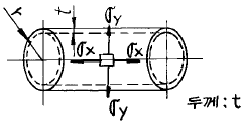
- 1/2
- 2
- 4
- 1/4
(정답률: 알수없음)
40. 직경이 d인 짧은 환봉(丸棒)의 축방향에서 P인 편심 압축하중이 작용할 때 단면상에서 인장 응력이 일어나지 않는 a의 범위는?
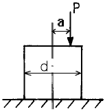
- 반경이
 인 원내에
인 원내에 - 반경이
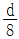
인 원밖에 - 반경이
 인 원내에
인 원내에 - 반경이
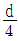
인 원밖에
(정답률: 알수없음)
3과목: 용접야금
41. 금속재료가 연성파괴에서 취성파괴하는 온도범위를 무엇이라 하는가?
- 임계온도
- 천이온도
- 층간온도
- 변태온도
(정답률: 알수없음)
42. 다음 중 산소ㆍ아세틸렌 가스절단이 가장 잘 되는 금속은?
- 주철
- 스테인리스강
- 비철금속
- 탄소강
(정답률: 알수없음)
43. 다음 중 면심입방 격자로만 된 것은?
- Al, Ni, Cu
- Pt, Pb, V
- Ag, Au, W
- Mg, Zn, Cd
(정답률: 80%)
44. 연강용 피복아크 용접봉의 심선재의 재료는?
- 주강
- 합금강
- 저탄소강
- 특수강
(정답률: 알수없음)
45. 1600℃에서 [H] = 0.0014 %가 함유되어 있고, KH = 0.0028 이라 할 때, 수소분압(PH2)은?
- 0.20 atm
- 0.25 atm
- 0.30 atm
- 0.35 atm
(정답률: 60%)
46. 다음 중 금속결정의 격자구조가 아닌 것은?
- 체심입방격자
- 면심입방격자
- 세밀오방격자
- 체심정방격자
(정답률: 알수없음)
47. 용착금속에 함유량이 증가하면 인장강도는 증가하지만 연신율과 충격치는 저하되고 뜨임취성 및 청열취성의 원인이 되는 가스는?
- 산소
- 질소
- 수소
- 탄소
(정답률: 알수없음)
48. 상온에서 소성스트레인을 받은 강재가 시간의 경과와 함께 강도가 증가하고 항복점 연신을 재현하는 현상을 무엇이라 하는가?
- 가공취화(work brittleness)
- 반복변형(repeated yielding)
- 스트레인 시효(strain aging)
- 스트렛처 스트레인(stretcher strain)
(정답률: 알수없음)
49. 용접금속이 응고할 때 용융금속 중의 산소와 결합하여 산소 제거 작용을 하는 탈산제는?
- 금속망간-형석분말
- 티탄철-이산화망간분말
- 규소철-규산칼리분말
- 망간철-알루미늄분말
(정답률: 60%)
50. 금속의 조직에서 페라이트의 설명은?
- 체심입방격자의 α 철에 탄소를 고용한 상(相)
- 6.67 % C를 함유한 탄화철
- 철-탄화철계의 공정조직
- 면심입방격자에 탄소를 고용한 상(相)으로 정사방정
(정답률: 알수없음)
51. Cu합금의 용접시 열영향부의 넓이는 연강에 비해 어떠한가?
- 같다.
- 용접방법에 따라 다르다
- 매우 좁다.
- 매우 넓다.
(정답률: 67%)
52. 비파괴검사 중 음향방출(acoustic emission)에 대한 설명과 거리가 가장 먼 것은?
- 고체가 변형하여 파괴될 때 음이 방출되는 현상이다.
- 음성주파수(20∼20000Hz)이상의 초음파의 경우 많다.
- 응력파 방출(stress wave emission)이라고도 한다.
- 미소한 균열과 구멍 및 슬랙혼입 등을 고감도로 검출하는 방법이다.
(정답률: 알수없음)
53. 금속의 슬립(slip)에 대한 설명 중 틀린 것은?
- 슬립선은 변형이 진행됨에 따라 그 수가 많아 진다.
- 슬립은 금속고유의 슬립면에 따라 이동이 생긴다.
- 소성변형이 진행되면 슬립에 대한 저항이 점점 증가하고 그 저항이 증가하면 경도는 감소된다.
- 슬립의 방향은 원자밀도가 제일 큰 방향이다.
(정답률: 알수없음)
54. 저탄소강을 인장시험 하면 200∼300℃의 온도범위에서 인장강도는 매우 증가하고, 또한 연성의 저하를 나타내는 경우가 있다. 이 현상을 무엇이라 하는가?
- 청열취성(blue shortness)
- 변형시효(strain aging)
- 적열취성(hot shortness )
- 저온취성(low temperature brittleness)
(정답률: 알수없음)
55. 강의 열영향부 조직에 대한 설명 중 맞는 것은?
- 조립역은 약 900℃이상의 가열을 받은 부위이다.
- 세립역은 재결정으로 미세화한 부분으로 취화되어 있다.
- 취화역은 열응력으로 취화되는 경우가 있고, 현미경 조직으로는 변화가 없다.
- 원질부는 약 200~500℃의 열을 받은 부위이다.
(정답률: 알수없음)
56. 용접금속의 탈산반응식이 아닌 것은?
- FeO + Mn ⇄ MnO + Fe
- 2FeO + Si ⇄ SiO2 + 2Fe
- FeO + C ⇄ Co + Fe
- 3FeO + 2A l⇄ Al2O3 + 3Fe
(정답률: 알수없음)
57. 철-탄화철계인 공정조직으로 4.3%C 인 공정성분의 액체가 1130℃에서 응고하여 생기는 조직으로 세립의 오스테나이트와 시멘타이트가 혼합한 조직은?
- 펄라이트(Pearlite)
- 트루스타이트(Troostite)
- 레데뷰라이트(Ledeburite)
- 페라이트(Ferrite)
(정답률: 알수없음)
58. 강을 오스테나이트(austenite)의 상태에서 물 또는 기름 등의 속에 넣어서 급냉하는 것을 담금질이라 한다. 담금질하면 조직은 어떻게 되는가?
- 마텐자이트(martensite)
- 오스테나이트(austenite)
- 펄라이트(pearlite)
- 시멘타이트(cementite)
(정답률: 알수없음)
59. 용접 후 열처리의 목적이 아닌 것은?
- 용접 잔류 응력의 제거
- 용접 열영향부 경화조직의 연화
- 조대 결정 조직의 미세화
- 잔류 수소량의 방출
(정답률: 알수없음)
60. Fe-C 상태도의 아공석강에서 탄소의 함유량이 증가함에 따라 A3 변태 온도는?
- 높아진다.
- 낮아진다.
- 변하지 않는다.
- 낮아지다가 높아진다.
(정답률: 알수없음)
4과목: 용접구조설계
61. 다음 그림은 T형 이음인데 인장력과 굽힘작용을 받을 경우 가장 신뢰도가 높은 이음은?
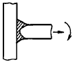
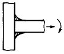
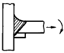
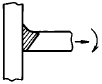
(정답률: 80%)
62. 가장 얇은 판에 사용하는 용접홈의 모양은?
- V형
- I형
- X형
- H형
(정답률: 알수없음)
63. 용접 시험편에 노취(notch)를 만들지 않고 시험하는 것은?
- 킨젤시험(Kinzel test)
- 벤델빈 시험(Van der test)
- 로벗슨 시험(Robertson test)
- 피스고 균열시험(Fisco cracking test)
(정답률: 알수없음)
64. 서브머지드 아크용접에 균열이 발생하였다. 그 원인으로 적합한 것은?
- 플락스(flux)의 살포량이 과부족하였다.
- 용접속도가 너무 빨라 용접부가 급냉되었다.
- 망간 함유량이 많은 와이어를 사용하였다.
- 플락스(flux)에 습기가 많았다.
(정답률: 알수없음)
65. 철강재료의 용접 균열을 줄이기 위해서 어떻게 하면 가장 좋은가?
- 탄소 함량이 높은 재료를 사용함
- 재료를 예열하고 서냉함
- 재료를 예열하고 급냉함
- 재료를 구속하여 자유로운 수축을 막음
(정답률: 알수없음)
66. 다음 금속의 용접 중 열전도율이 가장 큰 것은?
- 연강
- 18 - 8 스텐레스강
- 알루미늄
- 구리
(정답률: 알수없음)
67. 다음 용접에 의한 균열의 종류 중에서 루트 균열에 속하는 것은?
- 비드 표면에 생기는 균열
- 냉각속도가 빠르거나 크레이터의 처리가 잘못되어 생기는 균열
- 용착금속의 밑과 모재면에 생기는 균열
- 모재의 유황이 편석하여 있을 때 이 부분에 생기는 균열
(정답률: 55%)
68. 용접구조 설계상의 주의사항으로 틀린 것은?
- 용접이음의 집중, 접근 및 교차를 피한다.
- 용접성, 노치인성이 우수한 재료를 선택한다.
- 용접금속은 가능한 한 다듬질 부분에 포함되게 한다.
- 용접에 의한 변형 및 잔류응력을 경감시키도록 주의한다.
(정답률: 알수없음)
69. 용접할 때의 예열에 대한 설명 중 옳지 못한 것은?
- 예열온도는 같은 재료에서는 언제나 같다.
- 예열온도는 탄소량이 증가할수록 일반적으로 높게 한다.
- 예열온도 보다는 임계냉각속도가 중요하다.
- 예열온도가 높으면 냉각속도는 저하한다.
(정답률: 알수없음)
70. 다음 용접에 관한 각각의 설명 중 옳지 않은 것은?
- 용접지그는 용접제품을 조립할 때 사용하는 도구이다.
- 고정구는 용접부품을 잡고 있는 역할을 한다.
- 포지쇼너는 피용접물을 용접하기 쉬운 상태로 놓는다.
- 스트롱백은 용착금속이 흘러내리는 것을 방지한다.
(정답률: 60%)
71. 하중 3080 kgf 가 용접선에 수직방향으로 작용하는 V형 강판 맞대기 용접이음(완전용입)에서 두께가 10 mm,허용응력이 7 kgf/mm2, 이음효율 80% 라면 용접길이는 몇 mm 인가?
- 35
- 55
- 75
- 95
(정답률: 알수없음)
72. 다음 중 용접부의 피로강도 향상 대책이 아닌 것은?
- 냉간가공에 의한 기계적인 강도를 높인다.
- 열 및 기계적인 방법으로 잔류응력을 완화시킨다.
- 기계가공으로 용접부의 응력집중계수를 높인다.
- 용접부에 외력과 반대 방향의 응력을 작용시킨다.
(정답률: 알수없음)
73. 강판두께 t = 20 mm, 용접선의 길이 ℓ = 200 mm 의 평판 맞대기 이음에 굽힘모멘트 6000 kgfㆍcm 가 용접선에 직각 방향으로 작용할 때 굽힘응력은 몇 kgf/mm2 인가?
- 4.5
- 45
- 450
- 4500
(정답률: 알수없음)
74. 다음은 용접순서에 관한 설명들이다. 옳지 못한 것은?
- 동일 평면 내에 많은 이음이 있을 때 수축은 가능한 한 자유단으로 보낸다.
- 수축이 작은 이음을 가능한 먼저 용접한다.
- 물품의 중심에 대하여 항상 대칭으로 용접한다.
- 피용접물의 중립축에 대한 수축력 모멘트의 합이 0 이 되도록 한다.
(정답률: 알수없음)
75. 용접 금속의 열처리에서 어닐링(annealing)의 목적 중 옳지 않은 것은?
- 내부응력제거
- 금속입자의 규격조절
- 유연성 회복
- 강도 및 강인성 증가
(정답률: 90%)
76. 용접부의 냉각속도에 대한 설명으로 틀린 것은?
- 후판이 박판보다 냉각속도가 빠르다.
- 맞대기 이음보다 T형이음 용접의 경우가 냉각속도가 빠르다.
- 맞대기 이음보다 T형이음 용접의 경우가 냉각속도가 늦다.
- 두꺼운 판을 용접할 때 열은 여러 방향으로 방열되어 냉각속도가 빠르다.
(정답률: 알수없음)
77. 용접 잔류 응력과 변형의 발생요인이 될 수 없는 것은?
- 용융금속의 응고시에 있어서 모재의 열팽창
- 용접열사이클의 과정에 모재에 생기는 소성 변형도
- 냉각하는 도중 수축과 소성 변형도
- 미세한 기공(porosity)
(정답률: 알수없음)
78. 반복하중을 받는 용접구조물의 용접제작시 완전용입을 대체로 요구하고 있다. 이에 대한 제일 주된 이유는?
- 반복하중시 인장사이클에 대한 저항을 높이기 위함
- 반복하중시 압축사이클에 대한 저항성을 높이기 위함
- 응력집중에 의한 균열 개시를 방지하기 위함
- 용접 변형을 최소화 하기 위함
(정답률: 알수없음)
79. 현재 진행중인 균열의 크기와 성장을 검출할 수 있는 검사 방법은?
- 자기 탐상 검사
- 방사선 투과 검사
- 음향 탐상 검사
- 와전류 탐상 검사
(정답률: 알수없음)
80. AW-500인 용접기 15대를 설치하고자 하는 공장에서 필요한 변압기의 용량[kVA]은? (단, 용접기 사용시 평균 전류는 300 A, 개로 전압은 80 V, 사용률은 40%이다.)
- Q=120
- Q=144
- Q=1200
- Q=1500
(정답률: 알수없음)
5과목: 용접일반 및 안전관리
81. 피복아크 용접기에서 전류가 흐르는 순서로 옳은 것은?
- 용접기-용접봉홀더-용접봉-아크-모재
- 용접기-용접봉-용접봉홀더-아크-모재
- 용접봉홀더-용접기-용접봉-모재-아크
- 용접기-용접봉-용접봉홀더-모재-아크
(정답률: 알수없음)
82. 판두께가 10 mm, 드래그 길이가 1.8 mm 인 경우 드래그율은?
- 11.8%
- 18%
- 23.6%
- 36%
(정답률: 알수없음)
83. 아크 용접 입열량은 실용적으로 다음과 같이 계산한다. 여기에서 상수"60"은 어떤 의미를 가지는가?
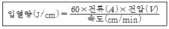
- 교류의 주파수가 60㎐이기 때문에 생긴 상수
- 용접방법에 따라 달라지는 상수
- 재료에 따라 달라지는 고유상수
- 시간단위를 맞추기 위한 상수
(정답률: 50%)
84. 가스절단 방법에서 아름다운 절단면을 얻을 수 있는 산소의 압력은 약 몇 kgf/cm2 이하인가?
- 10
- 3
- 7
- 15
(정답률: 알수없음)
85. 전기 아크용접 작업시 전격에 관한 주의사항 중 틀린 것은?
- 무부하 전압이 필요 이상으로 높은 용접기는 사용하지 않는다.
- 인체의 피부에 젖은 습기는 낮은 전압에서는 주의하지 않아도 된다.
- 작업종료시 또는 장시간 작업을 중지할 때는 반드시 용접기의 스위치를 끄도록 한다.
- 전격을 받는 사람을 발견했을 때에는 즉시 스위치를 꺼야한다.
(정답률: 알수없음)
86. 잠호 용접(submerged arc welding)의 용접장치에 관한 내용 중 옳은 것은?
- 수하 특성의 경우에는 이크길이가 일정하도록 와이어 이송을 정속도 제어한다.
- 수하 특성의 와이어 이송은 정속도 제어이나 아크길이의 변동은 전류의 변화로 된다.
- 정전압 특성의 와이어 이송은 정속도 제어이며 자기 제어로 아크길이가 유지된다.
- 정전압 특성의 와이어 이송은 가변속도 제어이며 아크전압을 검출하여 제어한다.
(정답률: 알수없음)
87. 용적(熔滴)이 이행(移行)하는 상태를 분류한 것중 틀린 것은?
- 피복이행
- 단락이행
- 스프레이이행
- 핀치효과이행
(정답률: 알수없음)
88. ASME(미국 기계 기술자협회)규정에서 잠호용접을 나타내는 약자는 다음 중 어느 것인가?
- S.A.W
- S.M.A.W
- G.T.A.W
- O.F.W
(정답률: 알수없음)
89. 다량의 산소연결관인 매니폴드 설치시 고려 사항이 아닌것은?
- 순간 최대사용량
- 가스용기를 교환하는 주기
- 필요한 가스용기의 수량
- 아세틸렌 용기수량
(정답률: 42%)
90. 가스 용접의 안전수칙 중 틀린 것은?
- 아세틸렌 가스는 통풍이 잘되는 곳에 설치한다.
- 자연환기가 불충분한 곳에서는 환기장치를 설치한 후 용접한다.
- 아세틸렌 가스도관과 연결부에는 구리를 사용한다.
- 호스는 호스밴드로 확실하게 연결되어 있는가 확인하고 호스걸이가 있을 때에는 걸어둔다.
(정답률: 90%)
91. 용접부에 생기는 잔류응력을 제거하려면 다음 중 어떤 처리를 하면 좋은가?
- 풀림을 한다.
- 불림을 한다.
- 담금질을 한다.
- 뜨임을 한다.
(정답률: 알수없음)
92. 용접입열이 크게 되면 어떤 현상이 생기는가?
- 강도가 증가한다.
- 결정립이 미세화된다.
- 인성이 증가한다.
- 결정립이 조대화된다.
(정답률: 알수없음)
93. 영구자석 및 스프링 등을 이용한 간단하고 가벼운 용접장치를 이용하여 고능률 하향 및 수평필릿 전용 용접법으로 개발된 것은?
- 그래비티 용접(gravity welding)
- 오토콘 용접(autocon welding)
- 테르밋 용접(thermit welding)
- 스터드 용접(stud welding)
(정답률: 알수없음)
94. 내용적 40리터의 산소용기에서 가스용접의 시작과 끝난 경우가 각각 95와 55기압(kgf/cm2)을 가리켰다. 산소 소비량은 몇 리터인가?
- 1000
- 1200
- 1600
- 1800
(정답률: 60%)
95. 가스 가우징(Gas-Gouging)법과 비교한 아크 에어 가우징 (Arc Air Gouging)법의 특징이 아닌 것은?
- 조작이 용이하다.
- 작업능률이 높다.
- 작업에서 소음이 많다.
- 모재에 나쁜 영향이 없다.
(정답률: 알수없음)
96. 플라즈마 아크용접의 특징에 대한 설명으로 틀린 것은?
- 용접변형이 적다.
- 이음 홈은 I형으로 가능하다.
- 용접봉의 소모가 적다.
- 용접속도가 느리고 용입이 얕다.
(정답률: 알수없음)
97. 연강용 피복아크 용접봉에서 잘못 표시된 것은?
- E4303 : 라임티탄계 용접봉
- E4311 : 고셀룰로스계 용접봉
- E4313 : 고산화 티탄계 용접봉
- E4301 : 저수소계 용접봉
(정답률: 알수없음)
98. 용접시 전안염을 일으키는 요인은?
- 중독성 가스
- 아크 광선
- 스패터링과 슬랙의 비산(飛散)
- 감전
(정답률: 알수없음)
99. 내열 합금의 땜납 종류에 대한 납땜온도 표기가 잘못된 것은?
- BAgMn - (970∼1150℃)
- BCuAu - (990∼1090℃)
- BNiCr - (1090∼1180℃)
- BCuZn - (1200∼1260℃)
(정답률: 46%)
100. 잠호용접에서는 이음 홈 가공과 맞춤의 정밀도가 중요하다. 뒷받침을 사용하지 않을 경우 적당한 루트 간격은?
- ±2 mm
- ±1 mm
- 0.8 mm 이하
- 0.1 mm 이하
(정답률: 알수없음)